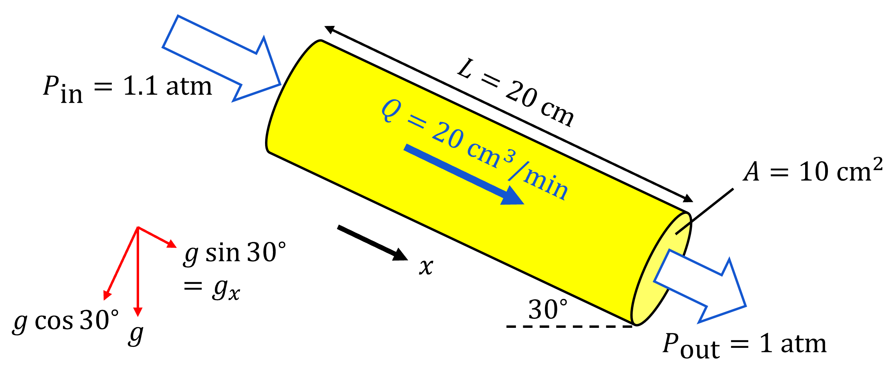

Permeability
The permeability of a cylindrical core sample can be calculated here.
{% if permeability %}
Permeability: {{ '%.1e'|format(permeability) }} D
{% endif %}
Background
Permeability is the cross-sectional area of the smallest throat in a medium that a fluid must move through to flow through the medium.
It depends on the pore structure. As it has a very low value, it is usually expressed in Darcy (\(D\)), where \(1 \; \text{D} \approx 10^{-12} \; \text{m}^2\).
This calculator is supported by Darcy's law, the equation of the volume-averaged flow velocity in a porous medium, assuming slow steady-state flow (no turbulence, no time-dependent term).
\[ \boldsymbol{q} = -\frac{K}{\mu} \left( \nabla P - \rho \boldsymbol{g} \right) \]
- \(\boldsymbol{q}\) = Darcy velocity of the fluid (\( \text{m/s} \))
- \(K\) = Permeability of the medium (\( \text{m}^2 \))
- \(\mu\) = Fluid viscosity (\( \text{Pa.s} \))
- \(\nabla P\) = Pressure gradient of the fluid across the medium (\( \text{Pa/m} \))
- \(\rho\) = Fluid density (\( \text{kg}/\text{m}^3 \))
- \(\boldsymbol{g}\) = Gravitational acceleration (\( \text{m}/\text{s}^2 \))
Darcy velocity/flux is not a flow velocity, but a macro-scale volumetric flow rate (\( \boldsymbol{Q} \;(\text{m}^3/\text{s}) \)) per unit area (\( A \;(\text{m}^2) \)) through the cross section of a medium, that is:
\[ \boldsymbol{q} = \frac{\boldsymbol{Q}}{A} \]
Since fluids can only flow through the pore space, the Darcy velocity is related to the interstitial velocity (\( \boldsymbol{v} \)) by the porosity (\( \phi \)):
\[ \boldsymbol{v} = \frac{\boldsymbol{q}}{\phi} \]
Some fluids have a retardation property since their molecules like to stick to the solid, making the interstitial velocity lower.
The property is quantified by the retardation coefficient (\( R \)). For conservative (non-tracing) tracer (no retardation effect), \( R=1 \); otherwise, \( R>1 \).
The interstitial velocity is then:
\[ \boldsymbol{v} = \frac{\boldsymbol{q}}{\phi R} \]
Example
An experiment is performed on a core inclined by 30 degrees from the horizontal.
The cross-sectional area is 10 \(\text{cm}^2\).
Water flows through the core in the downhill direction at a rate of 20 \(\text{cm}^3\) per minute.
The inlet and outlet pressures are 1.1 and 1 atmosphere, respectively.
The rock porosity is 0.25.
The core has a length of 20 \(\text{cm}\).
The water density is 1,000 \(\text{kg}.\text{m}^{-3}\)
The water viscosity is 10
-3 \(\text{Pa.s}\).
You may assume that atmospheric pressure is 101 \(\text{kPa}\).
What is the permeability of the rock?
What speed is water moving through the rock?
How long would it take for the injected water to be produced?
The diagram below shows the experiment conducted to measure the permeability of the rock.

Recall the 1D Darcy's law (in the x-direction):
\[
\begin{align}
q &= -\frac{K}{\mu} \left( \frac{\partial P}{\partial x} - \rho g_x \right) \\
&= -\frac{K}{\mu} \left( \frac{P_{out} - P_{in}}{L} - \rho g_x \right) \\
&= \frac{K}{\mu} \left( \frac{P_{in} - P_{out}}{L} + \rho g_x \right)
\end{align}
\]
where
- \( q \) = Darcy velocity of the fluid (\(\text{m}/\text{s}\))
- \( K \) = Permeability of the core (\(\text{m}^2\))
- \( \mu \) = Fluid viscosity (\(\text{Pa.s}\))
- \( \frac{\partial P}{\partial x} \) = Pressure gradient in the x-direction (\(\text{Pa/m}\)) = Difference between the outlet (\( P_{out} \)) and inlet (\( P_{in} \)) pressures over a length \(L\) in the x-direction
- \( \rho \) = Fluid density (\(\text{kg}/\text{m}^3\))
- \( g_x \) = Gravitational acceleration in the x-direction (\(\text{m}/\text{s}^2\))
Given that water flows through the rock with a rate (\(Q\)) of 20 \(\text{cm}^3/\text{min}\) across a 10 \(\text{cm}^2\) cross-sectional area (\(A\)).
Finding \(Q\):
\[
\begin{align}
q &= \frac{Q}{A} \\
&= \frac{20 \;\text{cm}^3}{1 \;\text{min}} \times \frac{1}{10 \;\text{cm}^2} \\
&= \frac{20 \;\text{cm}^3}{1 \;\text{min}} \times \frac{1}{10 \;\text{cm}^2} \times \frac{1 \;\text{m}}{100 \;\text{cm}} \times \frac{1 \;\text{min}}{60 \;\text{s}} \\
&= 3.33 \times 10^{-4} \;\text{m}/\text{s} \\
\end{align}
\]
Given that:
\[
\begin{align}
\mu &= 10^{-3} \;\text{Pa.s} \\
P_{in} &= 1.1 \;\text{atm} = 1.111 \times 10^5 \;\text{Pa} \\
P_{out} &= 1 \;\text{atm} = 1.01 \times 10^5 \;\text{Pa} \\
L &= 20 \;\text{cm} = 0.2 \;\text{m} \\
\rho &= 1000 \;\text{kg}/\text{m}^3 \\
g_x &= g \sin 30^\circ = 4.9 \;\text{m}/\text{s}^2
\end{align}
\]
Finding \(K\):
\[
\begin{align}
3.33 \times 10^{-4} &= \frac{K}{10^{-3}} \left( \frac{(1.111 - 1.01) \times 10^5}{0.2} + 1000 \times 4.9 \right) \\
K &= 6.0 \times 10^{-12} \;\text{m}^2 \\
&= 6.0 \;\text{D}
\end{align}
\]
Finding the interstitial velocity of the fluid (\(v\)):
\[v = \frac{q}{\phi}\]
where \(\phi\) is the porosity of the core.
Since \(q = 3.33 \times 10^{-4} \;\text{m/s}\), and given that \(\phi = 0.25\), so:
\[
\begin{align}
v &= \frac{3.33 \times 10^{-4}}{0.25} \\
&= 1.3 \times 10^{-3} \;\text{m/s}
\end{align}
\]
The length of the core is 0.2 \(\text{m}\), so the time taken by water to go through the core is:
\[
\begin{align}
t &= \frac{L}{v} \\
&= \frac{0.2}{1.3 \times 10^{-3}} \\
&= 154 \;\text{s} \\
&\approx 2.6 \;\text{min}
\end{align}
\]
So, the permeability of the core is 6.0 \(\text{D}\). The water is moving through the core at a speed of \( 1.3 \times 10^{-3} \;\text{m/s} \), taking around 2.6 minutes.
{% endblock %}